my treasure box
−1999/3/9−
まだ車の部品も届いていないような状況です。いつ帰れるかわかりません。
ここは山口県の美祢市、訪れる予定の無かった、偶然たどり着いた場所です。車が直るまでただ待っていてもしょうがないので、観光を続けることにしました。近くに秋吉台・秋吉洞があり、ラッキーです。１３ｋｍ離れていましたが、気分転換もかねて、歩いて行って来ました。
| ○山口県美祢市 発 |
| ＝＞ 国道４３５号線 ＝＞ |
| ○秋吉町 経由 |
| ＝＞ 国道４３５号線 ＝＞ |
| ○山口県美祢市 着 |
〜秋吉洞〜
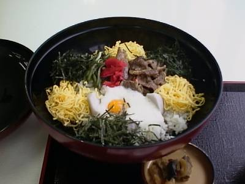
秋吉洞への道のりにはいろいろなおみやげやさんがあります。その中で、秋吉洞名物ということで「カルスト洞丼」を食べました。
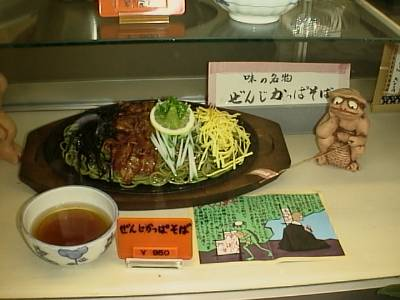
また、もう一つの名物が、河童をモチーフにした河童そばです。この写真は店先のサンプルです。
洞内の写真はやはりデジカメでとっています。暗めですがご容赦ください。
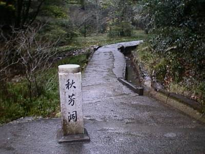
これが、洞窟の入り口の入り口。
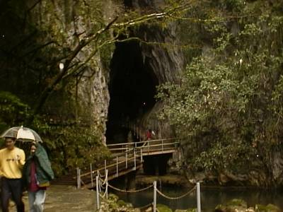
洞窟の入り口。
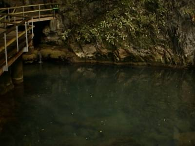
入り口からは水が流れ出し、池を作っています。水がきれいです。
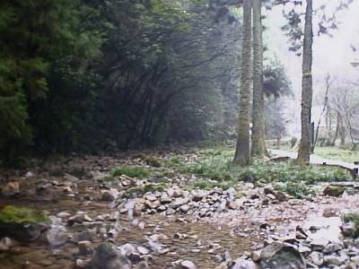
池は川を作り下流へと流れていきます。この辺りは緑が深く、気持ちのいいところです。
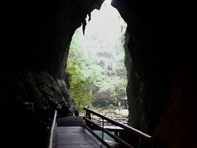
入り口を洞内から見た写真。
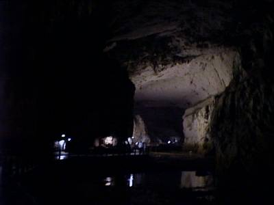
洞内。
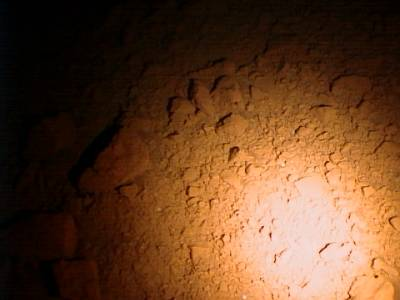
目をこらさないと水があるのかわからないほど、きれいな水が洞内を流れています。
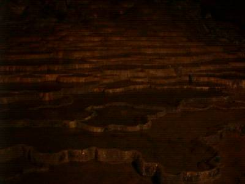
百枚皿。
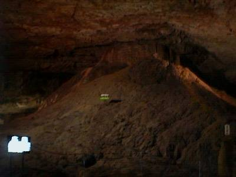
洞内富士。
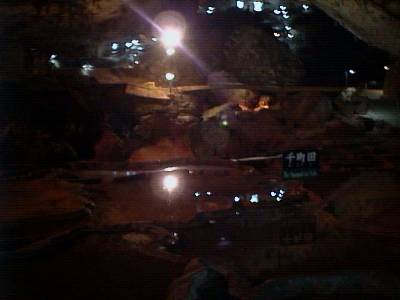
千町田。
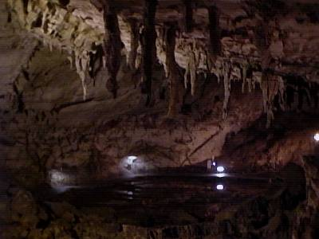
傘づくし。
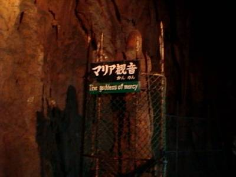
マリア観音。
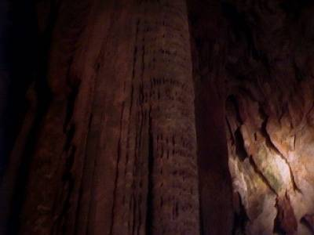
黄金柱。
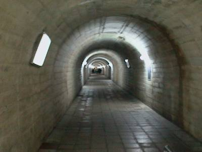
これが出口側。途中に休憩所があるぐらい長いトンネルです。
〜秋吉台〜
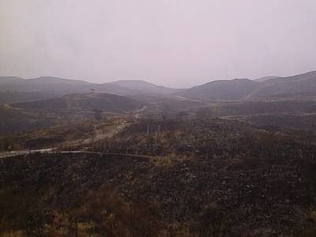
秋吉洞からエレベーターで秋吉台の展望台にいくことができます。
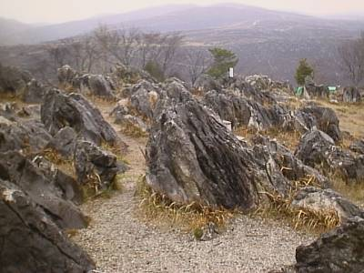
拡大図。
偶然よった場所でしたが、非常に満足しました。